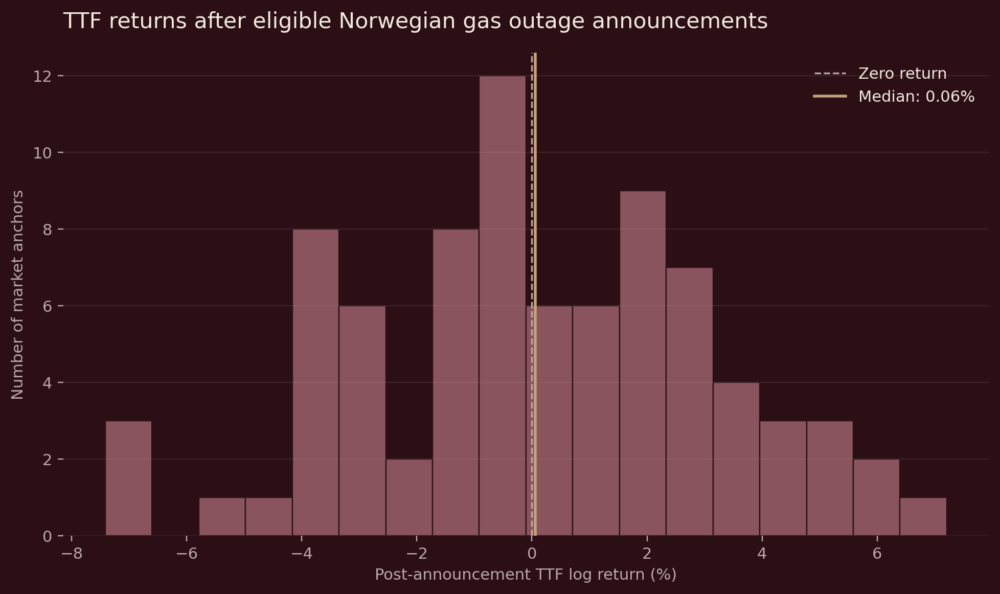
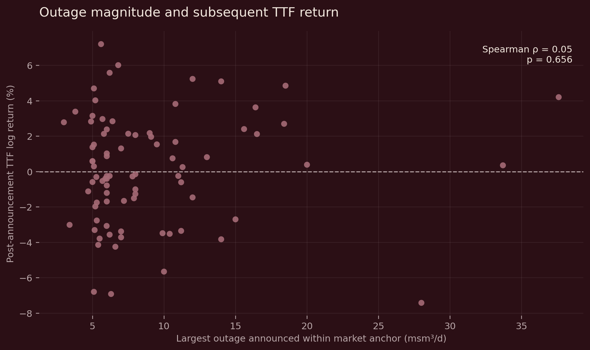

Norwegian Gas Outages & TTF#
Research Question#
How do near-term TTF prices behave around eligible first-revision Norwegian gas outage announcements, and do outage magnitude or publication timing help explain the observed response?
I reconstructed Gassco outage announcements, aligned their publication timestamps to observed TTF market dates and tested the distribution of subsequent price movements.
At a glance#
Metric |
Value |
|---|---|
Eligible first-revision announcements |
166 |
Unique TTF market anchors |
130 |
Non-overlapping formal sample |
82 |
Median post-anchor return |
+0.057% |
95% bootstrap interval |
-0.526% to +0.925% |
Wilcoxon p-value |
0.689 |
Main finding: the formal sample does not show a common unconditional directional TTF response following these outage announcements.
Publication timing is important to the design. Of the 166 eligible announcements, 110 were published after the reported operational start of the outage and 56 were published before or at the start. The publication timestamp is therefore used as the information event for market alignment rather than assuming the physical outage start is when the market first learns about the disruption.
Workflow#
The project separates data engineering, market alignment and statistical analysis rather than treating the raw outage file as an event-study dataset.
Gassco outage files
→ Python ingestion and type cleaning
→ PostgreSQL validation and eligibility rules
→ 166 eligible first-revision outage announcements
→ TTF market-data validation
→ publication-time alignment to observed TTF dates
→ 130 unique market anchors
→ 82 non-overlapping anchors for formal inference
Event Funnel#
Analytical level |
Observations |
Purpose |
|---|---|---|
Eligible announcements |
166 |
Outage characteristics, publication timing and event composition |
Unique TTF market anchors |
130 |
Avoid repeatedly counting the same TTF response window when announcements share an anchor |
Non-overlapping anchors |
82 |
Formal inference with mechanically overlapping return windows removed |
Multiple Gassco announcements can map to the same TTF market date. The 166 eligible announcements therefore correspond to 130 distinct market anchors rather than 166 independent price observations.
The wider event windows also overlap for some nearby anchors. Requiring retained anchors to be separated by at least three observed TTF trading intervals leaves 82 non-overlapping observations for formal inference.
TTF Validation and Event Windows#
The TTF series contains 591 unique daily observations from 1 July 2024 to 17 September 2026 and is validated before any event alignment is performed.
Each eligible Gassco announcement is then mapped to the observed TTF calendar:
117 announcements have a same-date TTF observation;
49 require forward alignment to the next observed market date;
of those 49, 30 are mapped forward by one calendar day, 18 by two days and one by three days.
Because the market series is daily rather than intraday, the analysis does not claim to isolate an instantaneous announcement reaction. Instead, several daily response windows are examined around the aligned market anchor.
Results#
Across the 130 unique market anchors, the median post-anchor ([0,+1]) return is +0.279%. This full sample is retained as a descriptive reference because some event windows overlap in trading time.
Formal inference is based on the 82 non-overlapping anchors. Their median post-anchor return is +0.057%, with a 95% bootstrap confidence interval of -0.526% to +0.925%.
The formal tests do not identify a common unconditional directional response:
Question |
Estimate |
Test result |
|---|---|---|
Typical post-anchor return |
Median = +0.057% |
Wilcoxon p = 0.689 |
Outage size vs return |
Spearman rho = 0.050 |
p = 0.656 |
Publication timing |
Medians = -0.246% / +0.753% |
Mann-Whitney p = 0.496 |
Post-announcement return distribution#

The non-overlapping event sample shows a wide spread of positive and negative post-announcement returns, with the median close to zero. This visual pattern is consistent with the formal test, which does not identify a common directional shift in TTF after the eligible outage announcements.
Outage magnitude and subsequent TTF return#

Larger announced outages are followed by both positive and negative TTF movements. In the 82 non-overlapping anchors, the Spearman rank correlation between the largest outage within the market anchor and the subsequent return is 0.050, with a p-value of 0.656.
Analytical Interpretation#
The more important finding is that headline outage capacity is a weak proxy for the market-relevant supply shock.
A large announced reduction may have limited price impact if it was already anticipated, offset elsewhere in the Norwegian system or absorbed by prevailing market conditions. Conversely, a smaller outage may matter more if it represents genuinely new information about near-term supply.
The analysis therefore suggests that a stronger market-risk signal would measure the unexpected change in net Norwegian supply at the time of publication, rather than relying on announced outage size alone.
Publication timing reinforces this point: the physical start of an outage and the arrival of new public information are not the same event, so market analysis should anchor on when information becomes observable rather than simply when the infrastructure disruption begins.
Limitations#
The analysis uses daily market data, so it cannot isolate the immediate intraday price reaction to a timestamped announcement.
The TTF dataset is a vendor-provided continuous futures series. The reported price should be interpreted as the vendor-reported closing price for that series rather than an official ICE settlement, and the historical contract-roll methodology has not been independently established.
The event study is descriptive rather than causal. It does not directly measure the unexpected change in aggregate Norwegian supply, and contemporaneous market information may influence the same return windows.
The non-overlapping sample reduces mechanical dependence caused by shared return intervals, but it does not imply that observations are fully independent across wider market regimes.
Technical Repository#
The full SQL/Python workflow, validation notebooks and statistical analysis are available in the technical repository: